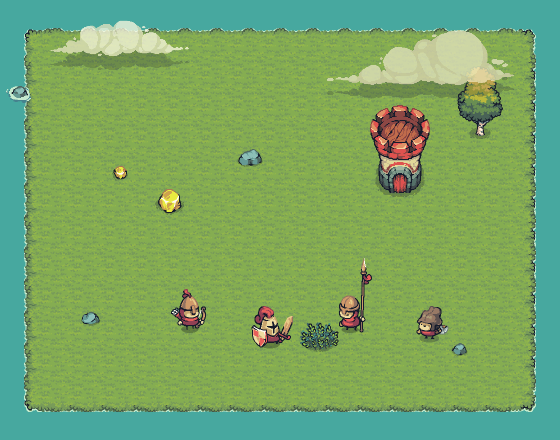

HỌC VIỆN CÔNG NGHỆ BƯU CHÍNH VIỄN THÔNG VIỆN CÔNG NGHỆ THÔNG TIN VÀ TRUYỀN THÔNG CDIT
BÁO CÁO BÀI TẬP GIỮA KÌ
Thiết kế màn chơi và cơ chế game Gear Defenders
Giảng viên hướng dẫn:
ThS. Trần Duy Hiếu
Sinh viên thực hiện:
Nguyễn Đình Cường Quốc
Mã sinh viên:
B24DCGA124
Lớp:
D24CQGA04-B
HÀ NỘI - 2026
Mục lục
Giới thiệu game: tổng quan, USP, gameplay cơ bản, đối tượng và thị trường
Tiến trình 50 level: giai đoạn, level curve, bảng tiến trình, thư viện cơ chế
Level brief chi tiết level 1–10: chỉ số playtest và One-page Level Design Document cho từng level
Tổng kết và hướng phát triển
Tóm tắt
Gear Defenders là game thủ thành kết hợp ghép đồ (merge) trên điện thoại, màn hình dọc. Người chơi không điều khiển lính mà điều khiển bộ máy bánh răng: mỗi bánh răng (gear) là một doanh trại lính; gear chỉ sinh lính khi đang quay, và chỉ quay khi được trục cam trung tâm đẩy trực tiếp hoặc qua một chuỗi bánh răng ăn khớp. Giữa các đợt địch có lượt nghỉ để mua gear, xếp lại lưới và ghép hai gear giống nhau lên bậc cao hơn.
Bản demo có 15 level chơi được, 13 loại lính, 6 tướng, làm bằng Godot 4 với bộ hình Tiny Swords. Tài liệu trình bày thiết kế cho 50 level: 15 level đầu dùng số liệu thật từ dữ liệu game, các level sau là lộ trình dự kiến. Mỗi level trong 10 level đầu được viết theo khung Purpose → Player/Mechanic → Dominant Feature → Goal → Challenge → Space → Encounter → Support → Outcome → Reward của môn học, và được kiểm chứng bằng bot tự chơi (win rate, thời gian chơi).
Thể loại
Tower defense + merge + auto-battler
Nền tảng
Android / iOS · dọc 720×1280 · bản web
Phiên chơi
1–5 phút mỗi màn · 4–8 đợt địch
Điểm khác biệt (USP)
Sinh lính bằng chuyển động bánh răngXếp xích truyền động như giải đốGhép gear lên bậcShop giữa đợt có chiến thuật kinh tếÔ đặc biệt trên lưới
1Giới thiệu game
Tên game
Gear Defenders
Thể loại
Thủ thành + ghép đồ (merge) + lính tự đánh
Bối cảnh
Vương quốc trung cổ bị Quân Đỏ và Quân Đen xâm lược; người chơi là kỹ sư vận hành cỗ máy bánh răng cổ giữ thành
Trải nghiệm cốt lõi
Cảm giác "lắp máy cho khéo": bánh răng ăn khớp và lính tuôn ra
Nền tảng
Mobile, màn hình dọc, chơi một tay; có bản chạy trên trình duyệt
Engine / đồ hoạ
Godot 4.7 · pixel art Tiny Swords · font Paytone One
Đối tượng người chơi
Casual–midcore, 13–35 tuổi
Học sinh, sinh viên, nhân viên văn phòng; chơi lúc rảnh 3–10 phút
Mobile first
Dọc, một tay, không cần phản xạ nhanh
Thích xếp cho khéo
Thích merge, giải đố không gian, tối ưu
Thích sưu tầm
13 lính, 6 tướng, rương, nâng cấp giữa các trận
Key values
Dễ học – khó giỏiCảm giác cơ khí thỏa mãnNhiều level, nhiều cơ chế mớiThưởng thường xuyênPhiên ngắn
Tham khảo thị trường
Nhóm game
Học hỏi
Khác biệt
Merge TD (kiểu Rush Royale)
Ghép cùng loại, shop ngẫu nhiên
Vị trí có ý nghĩa nhờ xích bánh răng
Auto-battler (kiểu TFT)
Lượt nghỉ mua sắm, lãi
1 người, phiên ngắn
Lượt nghỉ: shop 5 món, lưới gear, trục cam ở giữaĐợt địch: gear quay sinh lính, tướng dẫn đội
1Gameplay cơ bản
Điều khiển
Mua
Chạm món trong shop (tốn thịt) → gear vào ô trống
Di chuyển
Kéo gear sang ô khác; thả lên gear khác để đổi chỗ
Ghép
Thả gear lên gear cùng lính, cùng bậc → lên bậc (tối đa 5)
Bán
Kéo gear vào nút BÁN → hoàn 75% giá
Shop
Đổi 5 món (lần đầu miễn phí), khoá để giữ món
Thắng / thua / sao
Thắng: sống qua mọi đợt. Thua: thành hết máu. Sao: theo % máu thành còn lại.
Cơ chế truyền động
Trục cam ở giữa lưới quay liên tục; cần gạt của nó đẩy từng răng của gear kề bên. Gear chạm gear đang quay sẽ quay theo, tạo chuỗi truyền động. Chỉ gear đang quay mới sinh lính, mỗi răng quay là 3 giây sản xuất.
Kinh tế trong trận
Thu nhập mỗi đợt = 5 + số đợt, cộng lãi 1 thịt cho mỗi 5 thịt để dành (tối đa 3). Giá: Thường 2 · Hiếm 3 · Sử thi 4 · Huyền thoại 6.
Ngoài trận
Vàng và thẻ lính nâng cấp lính (cấp +8%, sao ×1,2), nâng thành (thêm ô lưới, ô đội hình), mở tướng; quà 7 ngày, nhiệm vụ, sự kiện.
Lính (13 loại)
Thường
Nông dân · Chiến binh · Cung thủ · Thợ mỏ · Thợ rèn
Hiếm
Kỵ thương · Sát thủ · Hiệp sĩ khiên · Cung lửa
Sử thi
Tu sĩ · Đầu bếp · Pháo thủ
Huyền thoại
Tướng quân
2Tiến trình 50 level
GĐ1 (1–10)Làm quen Học cơ chế cốt lõi: mua gear, đặt cạnh trục, ghép gear, xích truyền động, kinh tế lãi.
GĐ2 (11–20)Mở rộng cơ chế Mỗi màn thêm một biến thể của lưới gear hoặc một kiểu địch mới.
GĐ3 (21–30)Tăng thử thách Siết tài nguyên (thịt, máu thành, tốc độ trục) để buộc người chơi tối ưu.
GĐ4 (31–40)Biến thể phức tạp Lưới gear nhiều trục, bánh răng đảo chiều, địch tấn công hai hướng.
GĐ5 (41–50)Thử thách cao Tổng hợp mọi cơ chế, trùm nhiều giai đoạn, màn 50 là trùm cuối.
Đường cong độ khó (level curve)
Cột: độ khó cảm nhận 1–5 theo thiết kế, dạng răng cưa (theo Scott Kim): tăng trong mỗi giai đoạn, đỉnh ở trùm nhỏ (★, level x5) và trùm lớn (👑, level x0), rồi hạ ngay sau trùm để người chơi thở. Đường: chỉ số sức ép địch = số quân × sức mạnh địch ÷ máu thành, tính từ dữ liệu. Chấm đặc: level có trong demo.
Nguyên tắc tiến trình
Một level, một ý tưởng chính; 2–3 level sau kết hợp ý đó với ý cũ (giới thiệu → luyện → kết hợp → áp lực → thành thạo).
Tăng khó bằng Context / Combination / Constraint: ô đặc biệt, tổ hợp địch, giới hạn thịt, không chỉ tăng máu địch.
Sức ép địch tăng ~7%/level từ level 11; người chơi bù bằng nâng cấp và ô lưới.
Cơ chế mở khoá: quà lần đầu (lính mới ở level 1, 2, 3, 5, 7, 12, 15), kim cương và tướng ở trùm.
2Bảng tiến trình 50 level (1–25)
Lv
Tên màn
Đợt
Quân
Tinh nhuệ
Sức mạnh địch
Ô gear
Cơ chế / trọng tâm
Độ khó
Thưởng 3★
1
Đồng Cỏ
4
41
1
0,90
12
Mua gear, đặt cạnh trục cam, bánh răng quay thì sinh lính
●●●●●
160 Mở khoá Kỵ thương
2
Đồi Đá
5
65
1
1,40
12
Ghép 2 gear giống nhau lên bậc 2; Kỵ thương địch xuất hiện
●●●●●
200 Mở khoá Tu sĩ
3
Pháo Đài Đỏ
6
89
3
1,50
14
Xích truyền động qua gear khác; Tu sĩ địch hồi máu
Nhiều Hiệp sĩ khiên địch + ô đá: cần sát thương dồn
●●●●●
600 Mở khoá Thợ rèn
13
Đồi Cừu
8
183
3
3,60
22
Ô vàng: gear đặt lên sinh lính nhanh hơn 50%
●●●●●
640
14
Mỏ Vàng
8
176
3
3,70
22
Ô rỉ sét: gear chỉ truyền động, không sinh lính; kỵ thương dồn dập
●●●●●
680
15
Cầu Đá
8
182
4
4,40
22
Ô băng: gear chỉ quay khi chạm trục; trùm nhỏ Thợ rèn + khiên tinh nhuệ
●●●●●
720 Mở khoá Sát thủ
16
Trại Lính
8
218
5
4,50
22
Đầu bếp địch đi theo nhóm, hồi máu liên tục
●●●●●
760
17
Bãi Lau
8
223
5
4,82
22
Sương mù: không xem trước đợt địch kế tiếp
●●●●●
800
18
Tháp Canh
9
256
5
5,15
22
Shop chỉ còn 4 ô: chọn lọc kỹ hơn
●●●●●
840
19
Thung Lũng Gió
9
261
5
5,52
23
Hai tinh nhuệ mỗi đợt
●●●●●
880
20
Pháo Đài Đen
9
266
6
6,61
23
TRÙM: Tướng quân Đen + cận vệ khiên
●●●●●
920 50 kim cương + Pháo thủ
21
Làng Cháy
9
270
6
5,68
23
Thành bắt đầu với 70% máu
●●●●●
960
22
Cối Xay Gỉ
9
275
6
6,76
23
Trục cam quay chậm hơn 20%
●●●●●
1.000
23
Doanh Trại Pháo
9
280
6
7,23
23
Pháo thủ địch bắn vào bàn gear: gear trúng bom ngừng quay 3 giây
●●●●●
1.040
24
Mê Cung Đá
9
285
6
7,74
23
Ô lưới khoá luân phiên mỗi đợt
●●●●●
1.080
25
Đèo Hiểm
9
290
7
8,77
23
Trùm nhỏ: Sát thủ Bóng Đêm địch săn lính bắn xa
●●●●●
1.120 Rương Vàng
2Bảng tiến trình 50 level (26–50)
Lv
Tên màn
Đợt
Quân
Tinh nhuệ
Sức mạnh địch
Ô gear
Cơ chế / trọng tâm
Độ khó
Thưởng 3★
26
Chiến Hào
10
328
7
8,86
23
Đợt đôi: hai đợt liền nhau không có lượt nghỉ
●●●●●
1.160
27
Kho Lương Trống
10
334
7
9,48
23
Thịt khởi đầu thấp, lãi tiết kiệm tăng
●●●●●
1.200
28
Tu Viện Đen
10
339
7
10,14
23
Tu sĩ địch hồi sinh đồng đội một lần
●●●●●
1.240
29
Tường Thành Cổ
10
345
7
10,85
23
Tổng hợp giai đoạn 3
●●●●●
1.280
30
Vua Đỏ Trở Lại
10
350
8
13,00
23
TRÙM 2 giai đoạn: khi còn 50% máu gọi thêm quân
●●●●●
1.320 80 kim cương + 10 mảnh tướng
31
Nhà Máy Bánh Răng
10
356
8
11,18
23
Hai trục cam: hai chuỗi truyền động riêng
●●●●●
1.360
32
Xưởng Đảo Chiều
10
361
8
13,29
23
Ô đảo chiều: gear quay ngược thì không sinh lính
●●●●●
1.400
33
Sông Băng
10
367
8
14,22
23
Địch làm chậm lính ta khi đánh trúng
●●●●●
1.440
34
Ngã Ba
11
409
8
15,22
23
Địch tấn công hai hướng: trái và phải
●●●●●
1.480
35
Cổng Sắt
11
415
9
17,26
23
Trùm nhỏ: Hiệp sĩ Thép miễn tên
●●●●●
1.520 Rương Vàng
36
Chợ Đen
11
421
9
17,42
23
Giới hạn 3 lần đổi shop cả màn
●●●●●
1.560
37
Tháp Cung
11
427
9
18,64
23
Địch miễn sát thương tên trong 2 đợt
●●●●●
1.600
38
Hẻm Chật
11
433
9
19,95
23
Số lính tối đa trên sân giảm còn 40
●●●●●
1.640
39
Thành Lũy Kép
11
439
9
21,34
23
Tổng hợp giai đoạn 4
●●●●●
1.680
40
Quân Đoàn Đen
11
446
10
25,58
23
TRÙM: 3 tinh nhuệ + Tướng quân Đen cùng lúc
●●●●●
1.720 100 kim cương + Tướng Sử thi
41
Vực Thẳm
11
452
10
21,99
23
Mọi đợt có tinh nhuệ
●●●●●
1.760
42
Rừng Chết
12
499
10
26,15
23
Sương mù + đợt đôi
●●●●●
1.800
43
Pháo Đài Lửa
12
506
10
27,98
23
Cung lửa và Pháo thủ địch số đông
●●●●●
1.840
44
Đại Lộ Máu
12
512
10
29,93
23
Thành 60% máu + trục chậm
●●●●●
1.880
45
Cổng Địa Ngục
12
519
11
33,95
23
Trùm nhỏ: hai Tướng quân địch
●●●●●
1.920 Rương Vàng x2
46
Tháp Đồng Hồ
12
526
11
34,27
23
Hai trục cam + ô khoá luân phiên
●●●●●
1.960
47
Hầm Mộ
12
532
11
36,67
23
Địch hồi sinh + hồi máu
●●●●●
2.000
48
Lâu Đài Gió
12
539
11
39,24
23
Tấn công hai hướng + shop 4 ô
●●●●●
2.040
49
Ngai Vàng
12
545
11
41,98
23
Tổng hợp mọi cơ chế
●●●●●
2.080
50
Vua Đen
12
552
12
50,31
23
TRÙM CUỐI 3 giai đoạn
●●●●●
2.120 200 kim cương + Tướng Huyền thoại
Tên in nghiêng xám: level dự kiến. Sức mạnh địch: hệ số nhân máu và sát thương quân địch. Ô gear: số ô lưới ở cấp thành khuyến nghị. Nền cam: trùm lớn; nền vàng: trùm nhỏ. Bảng dạng Excel: bang_tien_trinh_50_level.xlsx.
2Thư viện cơ chế
Mỗi cơ chế ghi rõ level mở, luật, ràng buộc khi thiết kế và các sai lầm thường gặp, để level designer và lập trình viên hiểu giống nhau (theo mẫu Block Library của các file level design).
Cơ chế
Mở ở
Luật
Ràng buộc thiết kế
Sai lầm người chơi
Sai lầm designer cần tránh
Trục cam + xích truyền động
L1 / L3
Gear kề trục (hoặc kề gear đang quay) mới quay; mỗi răng quay = 3 giây sản xuất
Lưới mở dần theo cấp thành, từ tâm ra ngoài
Đặt gear ở ô không quay
Mở ô xa trục trước khi người chơi hiểu chuỗi
Ghép gear (merge)
L2
2 gear cùng lính, cùng bậc → bậc +1 (tối đa 5); mạnh gấp đôi
Shop phải thường xuyên có món ghép được ở giai đoạn đầu
Để lưới đầy gear bậc 1
Shop quá ngẫu nhiên, không có cặp để ghép
Kinh tế lãi + khoá shop
L4 / L6
Hết đợt: 5 + số đợt; lãi +1/5 thịt để dành (tối đa +3); khoá giữ món
Giá: Thường 2, Hiếm 3, Sử thi 4, Huyền thoại 6
Tiêu hết thịt mỗi lượt
Thu nhập quá cao làm lãi vô nghĩa
Tinh nhuệ
L1
Máu x5, sát thương x1,8; thưởng 3 thịt khi hạ
≤1 tinh nhuệ/đợt ở giai đoạn 1
Không để dành gear mạnh cho đợt cuối
Dồn nhiều tinh nhuệ cùng lúc quá sớm
Địch khắc chế
L5 / L7 / L8
Thợ mỏ chịu tên; Sát thủ săn hậu tuyến; Đầu bếp, Thợ rèn hỗ trợ
Mỗi màn chỉ nhấn một kiểu khắc chế mới
Giữ một đội hình cho mọi màn
Khắc chế mà không cho xem trước đợt kế
Trùm
L10 (mỗi 10 màn)
Đơn vị Huyền thoại, thanh máu lớn, đòn diện rộng
Đặt ở đợt cuối, sau màn "thở"
Không dồn sát thương vào trùm
Trùm không có dấu hiệu báo trước
Ô đá
L11
Không đặt gear được
Không chặn cả 4 mặt trục
Quên đi đường vòng
Chặn đến mức không còn lời giải
Ô vàng
L13
Gear trên ô sinh lính nhanh hơn 50%
Đặt xa trục để thưởng cho chuỗi dài
Để trống ô vàng
Đặt ô vàng ngay cạnh trục (quá dễ)
Ô rỉ sét
L14
Gear quay, truyền động nhưng không sinh lính
Dùng làm "cổng" bắt buộc để đi ra xa
Đặt gear đắt lên ô rỉ
Rỉ sét cả 4 mặt trục ngay khi giới thiệu
Ô băng
L15
Gear không ăn khớp gear nào, chỉ quay khi chạm trục
Cắt chuỗi ở vị trí quan trọng
Nối chuỗi qua ô băng
Băng ở mọi mặt trục, không còn chuỗi
Tướng dẫn đội
Meta
Buff cả trận và ra trận như đơn vị mạnh; ngã thì trở lại đợt sau
Buff 8–20% để không phá cân bằng
Không nâng tướng
Tướng quá mạnh thay thế việc xếp gear
3Level brief level 1–10: tổng quan và chỉ số
Lv
Tên
Mục tiêu & cơ chế chính
Không gian
Số đợt
Số quân
Độ khó (1–5)
Thưởng
1
Đồng Cỏ
Mua gear, đặt cạnh trục cam, bánh răng quay thì sinh lính
12 ô (thành 1)
4
41
1
160 Mở khoá Kỵ thương
2
Đồi Đá
Ghép 2 gear giống nhau lên bậc 2; Kỵ thương địch xuất hiện
12 ô (thành 1)
5
65
2
200 Mở khoá Tu sĩ
3
Pháo Đài Đỏ
Xích truyền động qua gear khác; Tu sĩ địch hồi máu
Mỗi level chơi 4 lượt bằng bot dùng đúng thao tác kéo thả thật, với hồ sơ người chơi hợp lý khi tới level đó (cấp thành theo gợi ý, lính cấp 1→10, đội hình chỉ gồm lính đã mở). Win rate mục tiêu theo độ khó: Normal 75–100%, Hard 45–80%, Super Hard 30–50%.
Lv
Tên
Tag
Win rate mục tiêu
Win rate (bot)
Máu thành còn
Thời gian TB
Đánh giá
1
Đồng Cỏ
Normal
90%–100%
100% (4/4)
100%
1:14
Trong mục tiêu
2
Đồi Đá
Normal
75%–95%
100% (4/4)
94%
1:43
Dễ hơn mục tiêu
3
Pháo Đài Đỏ
Normal
90%–100%
100% (4/4)
100%
2:19
Trong mục tiêu
4
Rừng Thông
Normal
75%–95%
100% (4/4)
88%
2:22
Dễ hơn mục tiêu
5
Hẻm Núi
Normal
75%–95%
100% (4/4)
45%
2:35
Dễ hơn mục tiêu
6
Làng Bỏ Hoang
Normal
75%–95%
100% (4/4)
97%
3:27
Dễ hơn mục tiêu
7
Đầm Lầy
Hard
60%–80%
100% (4/4)
88%
4:06
Dễ hơn mục tiêu
8
Thành Đá Đen
Hard
60%–80%
50% (2/4)
28%
4:01
Khó hơn mục tiêu
9
Cổng Pháo Đài
Hard
60%–80%
50% (2/4)
30%
4:45
Khó hơn mục tiêu
10
Vua Đỏ
Hard
45%–65%
50% (2/4)
95%
3:26
Trong mục tiêu
LEVEL 1 · ĐỒNG CỎNormal · độ khó 1/5
Loại: Tower defense + merge4 đợt · 41 quân · 1 tinh nhuệSức mạnh địch 0,9Máu thành 100 · thịt đầu 6Lưới 12 ô (thành cấp 1)Thời gian dự kiến 1:14
“Mua gear, đặt sát quả cầu cam để bánh răng quay và gửi lính ra giữ thành.”
Purpose & context
Level hướng dẫn: dạy vòng lặp cốt lõi mua → đặt → quay → sinh lính.
Cho người chơi thắng dễ để tin vào cơ chế trước khi bị thử thách.
Giới thiệu khái niệm tinh nhuệ ở đợt cuối.
Player / Mechanic
Mua gear trong shop, kéo thả gear trên lưới
Dominant Feature
Trục cam + gear đầu tiên (hướng dẫn từng bước)
Goal
Giữ thành qua 4 đợt địch
Challenge
Rất nhẹ: 41 quân yếu; đợt 4 có tinh nhuệ Chiến binh đầu tiên
Space
Lưới 12 ô; 4 ô kề trục cam phát sáng vàng
Support
Hướng dẫn 5 bước có mũi tên, ô "quay được" phát sáng, nút SẴN SÀNG to
Outcome
Thắng: giữ thành (sao theo % máu). Thua: thành hết máu, gần như không xảy ra
Reward
160 vàng (x2 lần đầu) · Mở khoá Kỵ thương · rương chiến thắng
Level map (lưới gear, bố trí gợi ý)
Trục camÔ mởÔ khoáW = Chiến binhA = Cung thủ
Flow
1Mua gear đầu
➜
2Thấy gear quay, lính ra
➜
3Mua thêm, ghép thử
➜
4Bấm SẴN SÀNG
➜
5Hạ tinh nhuệ đợt 4
Challenges & encounters (các đợt)
Đợt 1 (5): 5 Nông dân
Đợt 2 (8): 6 Nông dân, 2 Chiến binh
Đợt 3 (11): 4 Chiến binh, 3 Cung thủ, 4 Nông dân
Đợt 4 (17): 8 Nông dân, 5 Chiến binh, 3 Cung thủ, 1 Chiến binh tinh nhuệ
Chỉ số & khoảnh khắc chính
Win rate mục tiêu
90%–100% (Normal)
Win rate bot
100% (4/4 lượt)
Máu thành còn (khi thắng)
100%
Điểm tắc
Đợt 4 (tinh nhuệ) nếu chỉ có 1 gear đang quay
Khoảnh khắc Aha
Gear không chạm trục thì đứng yên: vị trí quan trọng không kém loại lính.
Walkthrough (lời giải gợi ý)
Mua 2 Chiến binh, đặt vào 2 ô sáng kề trục.
Mua Cung thủ đặt phía dưới trục để bắn qua đầu tiền tuyến.
Có 2 gear giống thì kéo thả lên nhau để ghép.
Bấm SẴN SÀNG, lặp lại ở mỗi lượt nghỉ.
Notes / TBD
Gần như zero-fail: đo tỉ lệ người chơi bỏ hướng dẫn giữa chừng.
Theo dõi số gear đặt ở ô không quay (dấu hiệu chưa hiểu luật).
LEVEL 2 · ĐỒI ĐÁNormal · độ khó 2/5
Loại: Tower defense + merge5 đợt · 65 quân · 1 tinh nhuệSức mạnh địch 1,4Máu thành 100 · thịt đầu 7Lưới 12 ô (thành cấp 1)Thời gian dự kiến 1:43
“Ghép hai gear giống nhau thành một gear bậc 2 mạnh gấp đôi để chặn Kỵ thương.”
Purpose & context
Dạy cơ chế ghép gear (merge) và lợi ích giải phóng ô.
Giới thiệu kẻ địch gây sát thương cao (Kỵ thương).

Player / Mechanic
Kéo gear thả lên gear cùng lính, cùng bậc
Dominant Feature
Ghép gear lên bậc 2
Goal
Giữ thành qua 5 đợt
Challenge
Kỵ thương địch sát thương 14 buộc phải có gear bậc 2
Space
Lưới 12 ô: chỗ ít, ghép để có chỗ mua thêm
Support
Nhãn "GHÉP ĐƯỢC" trên thẻ shop; thông báo "Có 2 gear giống nhau!"
Outcome
Thắng: giữ thành. Thua: Kỵ thương phá thành ở đợt 3–5
Reward
200 vàng (x2 lần đầu) · Mở khoá Tu sĩ · rương chiến thắng
Đợt 8 (48): 22 Nông dân, 13 Chiến binh, 9 Kỵ thương, 1 Tướng quân, 1 Chiến binh tinh nhuệ, 1 Kỵ thương tinh nhuệ, 1 Tu sĩ tinh nhuệ
Chỉ số & khoảnh khắc chính
Win rate mục tiêu
45%–65% (Hard)
Win rate bot
50% (2/4 lượt)
Máu thành còn (khi thắng)
95%
Điểm tắc
Đợt 8 (trùm + 3 tinh nhuệ)
Khoảnh khắc Aha
Dồn sát thương đơn mục tiêu lên trùm; tướng dẫn đội gánh tiền tuyến.
Walkthrough (lời giải gợi ý)
Tích luỹ lãi để có gear bậc 3–4 trước đợt 8.
Hiệp sĩ khiên chặn chém lan của trùm.
Kỵ thương bậc cao dồn sát thương lên trùm.
Tướng dẫn đội ra trận lại ở đầu đợt 8.
Notes / TBD
Sau khi hạ sức mạnh địch 3,0 → 2,7: win rate bot 0% → 50%, đúng mục tiêu màn trùm.
Còn lượt thua sau 29 giây ở đợt 1: đợt mở màn cần nhẹ hơn.
4Tổng kết và hướng phát triển
Điều đã kiểm chứng
Vòng lặp mua → xếp → quay → sinh lính dễ hiểu: level 1–7 đạt win rate 100% với bot, level 1 xong trong khoảng 1 phút rưỡi.
Cơ chế bánh răng tạo được bài toán không gian: các level 11–15 dùng ô đá, ô vàng, ô rỉ sét, ô băng mà không cần hình mới.
Số liệu giúp tìm và sửa gai độ khó (level 2, level 8–10) trước khi có người chơi thật.
Vòng chỉnh sửa theo số liệu
Chỉ số playtest ở mục 3 cho thấy tác dụng của vòng này. Lần đo đầu cho thấy gai độ khó ở level 8–10: level 7 thắng 4/4 nhưng level 8 chỉ 1/4, level 9–10 thua cả 4 lượt, có lượt thua ngay ở đợt 1 sau 27 giây. Giả thuyết: sức mạnh địch tăng nhanh hơn sức mạnh người chơi ở mức nâng cấp vừa phải. Chỉnh: hạ sức mạnh địch level 8/9/10 và level 2 (gai đã thấy từ trước). Đo lại:
Lv
Tên
Win rate trước
Win rate sau
Thời gian TB sau
2
Đồi Đá
100% (4/4)
100% (4/4)
1:43
8
Thành Đá Đen
25% (1/4)
50% (2/4)
4:01
9
Cổng Pháo Đài
0% (0/4)
50% (2/4)
4:45
10
Vua Đỏ
0% (0/4)
50% (2/4)
3:26
Sức mạnh địch đã chỉnh: level 2: 2,0 → 1,4; level 8: 2,8 → 2,4; level 9: 3,0 → 2,6; level 10: 3,0 → 2,7. Bot chơi đều tay hơn người thật, nên số liệu dùng để so sánh giữa các level; Reach Rate và Churn Rate sẽ đo khi có người chơi thật.
Hạn chế
Win rate đo bằng bot, chưa có Reach / Churn thật; cần playtest với người chơi.
Level 7–10 dài 4–5 phút, hơi quá mục tiêu 2–4 phút; có thể bớt một đợt.
Bộ hình miễn phí có ít loại lính; kẻ địch mới dựa vào đổi màu và cơ chế.
Hướng phát triển
Giai đoạn 2 (11–20)
Đã làm 11–15 với ô đặc biệt; tiếp theo là địch hồi máu theo nhóm, sương mù, shop 4 ô, trùm level 20
Chọn buff giữa đợt
Hết mỗi đợt chọn 1 trong 3 thẻ buff: tăng tính chơi lại
Hệ phái lính
Thợ / Kỵ sĩ / Xạ thủ / Bóng tối: có 2–3 lính cùng hệ thì được buff
Kỹ năng tướng
Nút kỹ năng trong trận, hồi chiêu 20–30 giây
Chế độ và sự kiện
Vô tận, thử thách ngày, Boss Rush, tháp thử thách dạng giải đố
Đo lường
Ghi Level Start, Win/Lose, Play Time, thịt để dành mỗi lượt để tính Reach, Churn, Deep Metric
Sản phẩm nộp
Báo cáo PDF
bao_cao_thiet_ke_level.pdf (tài liệu này)
Slide tổng quan 1 trang
tong_quan_1_trang.png / .pdf
Bảng tiến trình 50 level
bang_tien_trinh_50_level.xlsx
Bản demo chơi được
GearDefenders_Demo_Windows.zip; bản web chạy trên trình duyệt